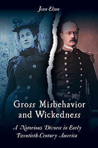

<body bgcolor="#FFFFFF" text="#000000" link="#0000FF" vlink="#CC0000" alink="#CC0000"><center><hr width="350" size="1" align="center" noshade>This fascinating story of the troubled marriage and acrimonious divorce of Nina and James Walker elucidates early twentieth-century gender and family mores<hr width="350" size="1" align="center" noshade><p><a href="https://cdcshoppingcart.uchicago.edu/Cart/ChicagoBook.aspx?ISBN=&&PRESS=temple" target="_top">Buy this book!</a> | <a href="https://cdcshoppingcart.uchicago.edu/Cart/Cart.aspx?PRESS=temple" target="_top">View Cart</a> | <a href="https://cdcshoppingcart.uchicago.edu/Cart/Cart.aspx?PRESS=temple" target="_top">Check Out</a></p><p></p></center><!--none//--><h1 class = "booktitle">Gross Misbehavior and Wickedness</h1> <h1 class = "subtitle">A Notorious Divorce in Early Twentieth-Century America
</h1>
<h3>Jean Elson</h3>
paper: $34.95, Jun 17<BR>EAN:&nbsp;978-1-4399-1391-8<BR><font color=#990033>Not Yet Published Preorder</FONT><font size=-7><br>&nbsp;</font></p><p class="info">cloth: $99.50, <BR>EAN:&nbsp;978-1-4399-1390-1<BR><font color=#990033>Not Yet Published Preorder</FONT><font size=-7><br>&nbsp;</font></p><p class="info">e-book: $34.95, <BR>EAN:&nbsp;978-1-4399-1392-5<BR><font color=#990033>Not Yet Published Preorder</FONT><font size=-7><br>&nbsp;</font></p></p></td></tr></table>
<BR> <p class="info">340 pp<BR> 6 x 9<BR> 13 halftones <p class="info"><font size=-7>&nbsp;</font></p><p class="info">
</P><BLOCKQUOTE></BLOCKQUOTE>
<p>
The bitter and public court battle waged between Nina and James Walker of Newport, Rhode Island from 1909 to 1916 created a sensation throughout the nation with lurid accounts of-and gossip about-their marital troubles. The ordeal of this high-society couple, who wed as much for status as for love, is one of the prime examples of the growing trend of women seeking divorce during the early twentieth century. <br>
<p><i>Gross Misbehavior and Wickedness</i>-the charges Nina levied at James for his adultery (with the family governess) and extreme cruelty-recounts the protracted legal proceedings in juicy detail.
<br />Jean Elson uses court documents, correspondence, journals, and interviews with descendants to recount the salacious case. In the process, she underscores how divorce-in an era when women needed husbands for economic support-was associated with women's aspirations for independence and rights. The Walkers' dispute, replete with plot twists and memorable characters, sheds light on a critical period in the evolution of American culture.
<br>
<P CLASS="top"><A HREF="#top">BACK TO TOP</A></P>&nbsp;
<BR>&nbsp;
&nbsp;<P>
</P><BR>&nbsp;
<H2 class="inpageheading"><A NAME="author bio"></a>About the Author(s)</H2><p>
<b>Jean Elson</b> is Senior Lecturer Emerita in the Department of Sociology at the University of New Hampshire and the author of<i> Am I Still a Woman? Hysterectomy and Gender Identity </i>(Temple).
<br>
<P CLASS="top"><A HREF="#top">BACK TO TOP</A></P>
<p><h2 class="inpageheading"><A NAME="subjects"></a>Subject Categories</h2><P><A HREF="/tempress/history.html" TARGET="_top">History</a><BR><P><A HREF="/tempress/sociology.html" TARGET="_top">Sociology</a><BR><P><A HREF="/tempress/women.html" TARGET="_top">Women's Studies</a></P></P>
</p>
<P>
</P>
<p align="center"><a href="https://cdcshoppingcart.uchicago.edu/Cart/ChicagoBook.aspx?ISBN=&&PRESS=temple" target="_top">Buy this book!</a> | <a href="https://cdcshoppingcart.uchicago.edu/Cart/Cart.aspx?PRESS=temple" target="_top">View Cart</a> | <a href="https://cdcshoppingcart.uchicago.edu/Cart/Cart.aspx?PRESS=temple" target="_top">Check Out</a></p><p><font face="Arial" size="1"><a href="copyright.html" onMouseOver="window.status='Web Copyright Policy';return true;" onMouseOut="window.status=''" title="Web Copyright Policy">&copy;</a> 2017 <a href="http://www.temple.edu" target="new" onMouseOver="window.status='Link to Temple University home page';return true;" onMouseOut="window.status=''" title="Link to Temple University home page">Temple University</a>. All Rights Reserved. http://www.temple.edu/tempress/titles/2417_reg.html</font></p>